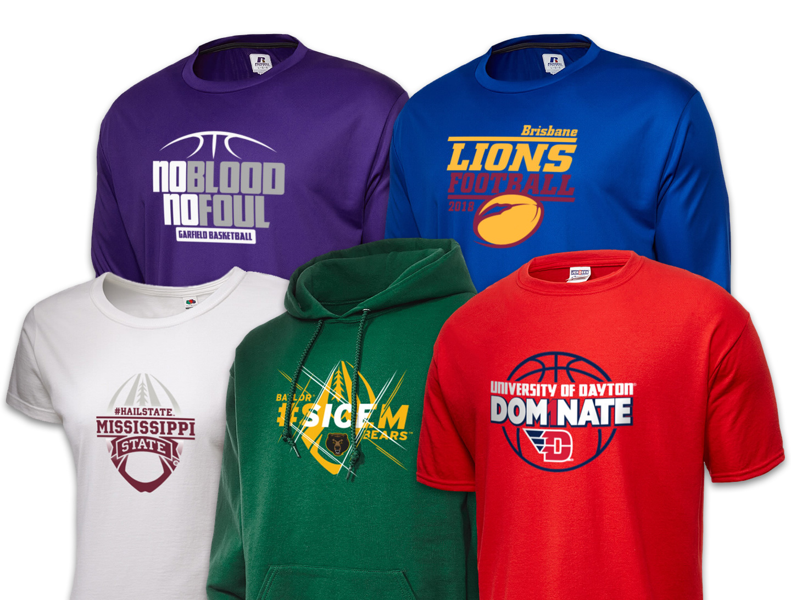

I was brought onto the Development team at Prep Sportswear to maintain the user interface of the website and make improvements where possible. The whole architecture of the site was wrapped into an explosive ball of tech-debt. After running a site analysis, it was found that there were over 200 unique colors, and similar amounts of unique font-sizes, etc. It was eventually decided to leave the whole thing alone and rebuild. Built within what was already there and still usable was a number of XML based proprietary tools and programs for making site updates. Below are a few highlights of what I worked on for the old website.

Campaign UX | UI Design & Development - Prior to moving to the development team, I had prove my skills in code. I was given a number of splash pages to design and develop that tied into marketing initiatives we were working on. We did a campaign with Russell Athletic targeting teams that lost their championship in a heartbreaking fashion, and playing to loss as motivation for next seasons run at the crown. I also worked to put together some of the strategy of these campaigns which included using geocaching to target specific markets using internet advertisements, social media, etc.

A quick experimental Prep Sportswear homepage redesign prototype. Focus on branding and creating a cleaner layout with site 'how-to' so new users better understand how to use the product. The user flow was a major pain point for new users. This would ultimately be addressed during the site redesign seen in the Little League project in my profile.
Product design | Research and Development - Part of my job while still on the design team was working on proprietary tools and working with the software engineers to create systems and data structures to improve process in the company. I worked with the production/manufacturing teams and a number of engineers to create new embellishment methods, tools for remapping of back-end data so that production teams could provide useful data to improve success rates, and tools for design asset creation (for things like college licensing approval documents). This entailed user research and interviews (internal users spread out among various teams), creating storyboards, wireframes, and designs to be passed to the software team to build

Tile management - Building CorelDraw templates and using a proprietary tool built for creating product overlays, I created dynamic tiles using placeholders and database admin tools to create product groupings which would change based on the data associated with the specific store a user was in. This was one method that allowes us to further brand all stores with custom SEO text and branding schemes.
Asset Creation - Working on the Design team, I was in charge of processing, editing, and maintaining photo assets. We used proprietary tools to dynamically create assets such as swatches and zoom cutouts, along with which I would create mesh grids to overlay placeholders for dynamic design changes. I also worked with the head of the design team to create a merchandising system (and mapping system for that) that allowed for custom collections of designs and associated product groupings.
Apparel Design Creation - I started with this company as a production designer before I became a graphic designer. Nearly all the design templates on the site were created by myself and one other designer using both dynamic and manual insertion of iconography. I created hundreds of templates, as well as doing a custom group of 30 new "fierce" mascots geared toward the high school crowd. They were sharper and more aggressive than our other few collections meant for k-12 generically, and were built with dynamic color schemes that allowed the user to change product colors while maintaining the contrast between the colors, and removing any color-on-color manufacturing/design errors.
I was the also the owner of the CMS for the customer service section of the site and navigation (Umbraco). It included all the contact forms, side navigation, company info, faqs, etc. The fun part was that the legacy site you see was built desktop only and had a separate mobile site housed within the main repository. So any changes made in the CMS needed to be reflected in the mobile sites pages manually. This also meant that often I was balancing and timing my releases to try to maintain the match between the desktop and mobile sites, keeping in mind that often new releases took weeks or months to happen, while the CMS was immediate once I hit publish.